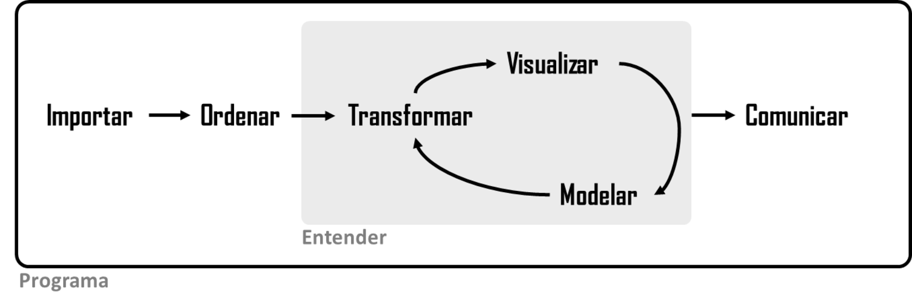

 Ordenar -> Comprender (que tiene las fases Transformar -> Visualizar -> Modelar en un ciclo) -> Comunicar. Rodeando todo esto está Programa. " width="535">
Introducción
La ciencia de datos es una disciplina apasionante que le permite transformar datos sin procesar en comprensión, perspectiva y conocimiento. El objetivo de “R para ciencia de datos” es ayudarlo a aprender las herramientas más importantes en R que le permitirán hacer ciencia de datos de manera eficiente y reproducible, y divertirse en el camino 😃. Después de leer este libro, tendrá las herramientas para abordar una amplia variedad de desafíos de ciencia de datos utilizando las mejores partes de R.
Lo que vas a aprender
La ciencia de datos es un campo amplio, y no hay forma de que puedas dominarlo todo leyendo un solo libro. Este libro tiene como objetivo brindarle una base sólida en las herramientas más importantes y el conocimiento suficiente para encontrar los recursos para aprender más cuando sea necesario. Nuestro modelo de los pasos de un proyecto típico de ciencia de datos se parece a Figura 1.
Primero, debe importar sus datos a R. Esto generalmente significa que toma datos almacenados en un archivo, base de datos o interfaz de programación de aplicaciones web (API) y los carga en un marco de datos en R. Si no puede llevar sus datos a R, ¡no puede hacer ciencia de datos en ellos!
Una vez que haya importado sus datos, es una buena idea ordenarlos. Ordenar sus datos significa almacenarlos en una forma consistente que coincida con la semántica del conjunto de datos con la forma en que se almacenan. En resumen, cuando sus datos están ordenados, cada columna es una variable y cada fila es una observación. Los datos ordenados son importantes porque una estructura coherente le permite centrar sus esfuerzos en responder preguntas sobre los datos, sin luchar para obtener los datos en la forma correcta para diferentes funciones.
Una vez que tenga datos ordenados, el próximo paso común es transformarlos. La transformación incluye la reducción de las observaciones de interés (como todas las personas en una ciudad o todos los datos del último año), la creación de nuevas variables que son funciones de las variables existentes (como la velocidad de cálculo a partir de la distancia y el tiempo) y el cálculo de un conjunto de estadísticas de resumen. (como la mediana o la media). Juntos, ordenar y transformar se denominan disputar (o manipular) porque obtener sus datos en una forma en la que es natural trabajar con ellos a menudo se siente como una pelea.
Una vez que tenga datos ordenados con las variables que necesita, hay dos motores principales de generación de conocimiento: visualización y modelado. Estos tienen fortalezas y debilidades complementarias, por lo que cualquier análisis de datos real iterará entre ellos muchas veces.
La visualización es una actividad fundamentalmente humana. Una buena visualización le mostrará cosas que no esperaba o le generará nuevas preguntas sobre los datos. Una buena visualización también podría indicar que está haciendo la pregunta incorrecta o que necesita recopilar datos diferentes. Las visualizaciones pueden sorprenderlo, pero no se escalan particularmente bien porque requieren que un ser humano las interprete.
Los modelos son herramientas complementarias a la visualización. Una vez que haya hecho sus preguntas lo suficientemente precisas, puede usar un modelo para responderlas. Los modelos son una herramienta fundamentalmente matemática o computacional, por lo que generalmente se escalan bien. ¡Incluso cuando no lo hacen, por lo general es más barato comprar más computadoras que comprar más cerebros! Pero todo modelo hace suposiciones y, por su propia naturaleza, un modelo no puede cuestionar sus propias suposiciones. Eso significa que un modelo no puede sorprenderte fundamentalmente.
El último paso de la ciencia de datos es la comunicación, una parte absolutamente crítica de cualquier proyecto de análisis de datos. No importa qué tan bien sus modelos y visualización lo hayan llevado a comprender los datos, a menos que también pueda comunicar sus resultados a otros.
Alrededor de todas estas herramientas está la programación. La programación es una herramienta transversal que utiliza en casi todas las partes de un proyecto de ciencia de datos. No necesita ser un programador experto para ser un científico de datos exitoso, pero aprender más sobre programación vale la pena porque convertirse en un mejor programador le permite automatizar tareas comunes y resolver nuevos problemas con mayor facilidad.
Usará estas herramientas en todos los proyectos de ciencia de datos, pero no son suficientes para la mayoría de los proyectos. Hay una regla aproximada de 80-20 en juego; puede abordar aproximadamente el 80 % de cada proyecto con las herramientas que aprenderá en este libro, pero necesitará otras herramientas para abordar el 20 % restante. A lo largo de este libro, le indicaremos los recursos donde puede obtener más información.
Cómo está organizado este libro
La descripción anterior de las herramientas de la ciencia de datos está organizada aproximadamente según el orden en que las usa en un análisis (aunque, por supuesto, las repetirá varias veces). En nuestra experiencia, sin embargo, aprender a importar y ordenar datos primero no es óptimo porque el 80 % del tiempo es rutinario y aburrido, y el otro 20 % del tiempo es raro y frustrante. ¡Ese es un mal lugar para comenzar a aprender un nuevo tema! En su lugar, comenzaremos con la visualización y transformación de datos que ya se han importado y ordenado. De esa manera, cuando ingiere y ordena sus propios datos, su motivación se mantendrá alta porque sabe que el esfuerzo vale la pena.
Dentro de cada capítulo, tratamos de adherirnos a un patrón concistente: comience con algunos ejemplos motivadores para que pueda ver el panorama general y luego profundice en los detalles. Cada sección del libro está emparejada con ejercicios para ayudarte a practicar lo que has aprendido. Aunque puede ser tentador saltarse los ejercicios, no hay mejor manera de aprender que practicar con problemas reales.
Lo que no aprenderás
Hay varios temas importantes que este libro no cubre. Creemos que es importante concentrarse despiadadamente en lo esencial para que pueda ponerse en marcha lo más rápido posible. Eso significa que este libro no puede cubrir todos los temas importantes.
Modelado
El modelado es muy importante para la ciencia de datos, pero es un gran tema y, lamentablemente, no tenemos el espacio para darle la cobertura que se merece aquí. Para obtener más información sobre modelado, recomendamos Tidy Modeling with R de nuestros colegas Max Kuhn y Julia Silge. Este libro le enseñará la familia de paquetes tidymodels que, como puede adivinar por el nombre, comparten muchas convenciones con los paquetes tidyverse que usamos en este libro.
Big data
Este libro se enfoca orgullosamente y principalmente en pequeños conjuntos de datos en memoria. Este es el lugar correcto para comenzar porque no puede abordar big data a menos que tenga experiencia con small data. Las herramientas que aprenderá a lo largo de la mayor parte de este libro manejarán fácilmente cientos de megabytes de datos y, con un poco de cuidado, normalmente puede usarlas para trabajar con unos pocos gigabytes de datos. También le mostraremos cómo obtener datos de bases de datos y archivos de parquet, los cuales se usan a menudo para almacenar big data. No necesariamente podrá trabajar con todo el conjunto de datos, pero eso no es un problema porque solo necesita un subconjunto o submuestra para responder la pregunta que le interesa.
Si trabaja habitualmente con datos más grandes (10-100 Gb, digamos), le recomendamos obtener más información sobre [data.table] (https://github.com/Rdatatable/data.table). No lo enseñamos aquí porque usa una interfaz diferente a tidyverse y requiere que aprendas algunas convenciones diferentes. Sin embargo, es increíblemente más rápido y vale la pena invertir algo de tiempo en aprenderlo si está trabajando con grandes datos.
Python, Julia, y amigos
En este libro, no aprenderá nada sobre Python, Julia o cualquier otro lenguaje de programación útil para la ciencia de datos. Esto no se debe a que pensemos que estas herramientas son malas. ¡No lo son! Y en la práctica, la mayoría de los equipos de ciencia de datos usan una combinación de lenguajes, a menudo al menos R y Python.
Pero creemos firmemente que es mejor dominar una herramienta a la vez, y R es un excelente lugar para comenzar.
Requisitos previos
Hemos hecho algunas suposiciones sobre lo que ya sabe para aprovechar al máximo este libro. En general, debe tener conocimientos numéricos, y es útil si ya tiene algo de experiencia en programación básica. Si nunca ha programado antes, es posible que encuentre que Hands on Programming with R por Garrett puede ser un valioso complemento de este libro.
Necesita cuatro cosas para ejecutar el código de este libro: R, RStudio, una colección de paquetes de R llamada tidyverse y un puñado de otros paquetes. Los paquetes son las unidades fundamentales del código de R reproducible. Incluyen funciones reutilizables, documentación que describe cómo usarlas y datos de muestra.
R
Para descargar R, vaya a CRAN la red comprensiva de archivos de R (por sus siglas en inglés: comprehensive R archive network), https://cloud.r-project.org. Una nueva versión principal de R sale una vez al año y hay 2 o 3 lanzamientos menores cada año. Es una buena idea actualizar regularmente. La actualización puede ser un poco complicada, especialmente para las versiones principales que requieren que vuelva a instalar todos sus paquetes, pero posponerlo solo empeora las cosas. Recomendamos R 4.2.0 o posterior para este libro.
RStudio
RStudio es un entorno de desarrollo integrado, o IDE, para programación R, que puede descargar desde https://posit.co/download/rstudio-desktop/. RStudio se actualiza un par de veces al año y le avisará automáticamente cuando haya una nueva versión disponible para que no tenga que volver a comprobarlo. Es una buena idea actualizar regularmente para aprovechar las últimas y mejores funciones. Para este libro, asegúrese de tener al menos RStudio 2022.02.0.
Cuando inicie RStudio, Figura 2, verá dos regiones clave en la interfaz: el panel de la consola y el panel de salida. Por ahora, todo lo que necesita saber es que escribe el código R en el panel de la consola y presiona enter para ejecutarlo. ¡Aprenderás más a medida que avancemos!1

tidyverse
También deberá instalar algunos paquetes de R. Un paquete de R es una colección de funciones, datos y documentación que amplía las capacidades de R básico. El uso de paquetes es clave para el uso exitoso de R. La mayoría de los paquetes que aprenderás en este libro forman parte del llamado tidyverse. Todos los paquetes en tidyverse comparten una filosofía común de datos y programación R y están diseñados para trabajar juntos.
Puedes instalar el tidyverse completo con una sola línea de código:
install.packages("tidyverse")En su computadora, escriba esa línea de código en la consola y luego presione Intro para ejecutarlo. R descargará los paquetes de CRAN y los instalará en su computadora.
No podrá usar las funciones, objetos o archivos de ayuda en un paquete hasta que lo cargue con library(). Una vez que haya instalado un paquete, puede cargarlo usando la función library():
library(tidyverse)
#> ── Attaching core tidyverse packages ───────────────────── tidyverse 2.0.0 ──
#> ✔ dplyr 1.1.4 ✔ readr 2.1.5
#> ✔ forcats 1.0.0 ✔ stringr 1.5.1
#> ✔ ggplot2 3.5.1 ✔ tibble 3.2.1
#> ✔ lubridate 1.9.3 ✔ tidyr 1.3.1
#> ✔ purrr 1.0.2
#> ── Conflicts ─────────────────────────────────────── tidyverse_conflicts() ──
#> ✖ dplyr::filter() masks stats::filter()
#> ✖ dplyr::lag() masks stats::lag()
#> ℹ Use the conflicted package (<http://conflicted.r-lib.org/>) to force all conflicts to become errorsEsto le dice que tidyverse carga nueve paquetes: dplyr, forcats, ggplot2, lubridate, purrr, readr, stringr, tibble, tidyr. Estos se consideran el núcleo del tidyverse porque los usará en casi todos los análisis.
Los paquetes en tidyverse cambian con bastante frecuencia. Puedes ver si hay actualizaciones disponibles ejecutando tidyverse_update().
Otros paquetes
Hay muchos otros paquetes excelentes que no forman parte de tidyverse porque resuelven problemas en un dominio diferente o están diseñados con un conjunto diferente de principios subyacentes. Esto no los hace mejores o peores, simplemente diferentes. En otras palabras, el complemento del tidyverse no es el desordenado sino muchos otros universos de paquetes interrelacionados. A medida que aborde más proyectos de ciencia de datos con R, aprenderá nuevos paquetes y nuevas formas de pensar sobre los datos.
Usaremos muchos paquetes de fuera del tidyverse en este libro. Por ejemplo, usaremos los siguientes paquetes porque proporcionan conjuntos de datos interesantes para que trabajemos en el proceso de aprendizaje de R:
install.packages(
c("arrow", "babynames", "curl", "duckdb", "gapminder",
"ggrepel", "ggridges", "ggthemes", "hexbin", "janitor", "Lahman",
"leaflet", "maps", "nycflights13", "openxlsx", "palmerpenguins",
"repurrrsive", "tidymodels", "writexl")
)También usaremos una selección de otros paquetes para ejemplos únicos. No necesita instalarlos ahora, solo recuerde que cada vez que vea un error como este:
Debe ejecutar install.packages("ggrepel") para instalar el paquete.
Ejecutando código de R
La sección anterior le mostró varios ejemplos de ejecución de código R. El código en el libro se ve así:
1 + 2
#> [1] 3Si ejecuta el mismo código en su consola local, se verá así:
> 1 + 2
[1] 3Hay dos diferencias principales. En su consola, escribe después de >, llamado prompt; no mostramos el aviso en el libro. En el libro, la salida se comenta con #>; en su consola, aparece directamente después de su código. Estas dos diferencias significan que si está trabajando con una versión electrónica del libro, puede copiar fácilmente el código del libro y colocarlo en la consola.
A lo largo del libro, usamos un conjunto consistente de convenciones para referirnos al código:
Las funciones se muestran en una fuente de código y van seguidas de paréntesis, como
sum()omean().Otros objetos R (como datos o argumentos de funciones) están en una fuente de código, sin paréntesis, como
flightsox.A veces, para dejar claro de qué paquete proviene un objeto, usaremos el nombre del paquete seguido de dos puntos, como
dplyr::mutate()onycflights13::flights. Este también es un código R válido.
Reconocimientos
Este libro no es solo el producto de Hadley, Mine y Garrett, sino que es el resultado de muchas conversaciones (en persona y en línea) que hemos tenido con muchas personas en la comunidad de R. Estamos increíblemente agradecidos por todas las conversaciones que hemos tenido con todos ustedes; ¡muchas gracias!
Este libro fue escrito abiertamente, y muchas personas contribuyeron a través de solicitudes de extracción. Un agradecimiento especial a todos 259 de ustedes que contribuyeron con mejoras a través de solicitudes de extracción de GitHub (en orden alfabético por nombre de usuario):
Colofón
Una versión en línea de este libro está disponible en https://r4ds.hadley.nz. Continuará evolucionando entre las reimpresiones del libro físico. El código fuente del libro está disponible en https://github.com/hadley/r4ds. El libro funciona con Quarto, lo que facilita la escritura de libros que combinan texto y código ejecutable.
Si desea obtener una descripción general completa de todas las funciones de RStudio, consulte la Guía del usuario de RStudio en https://docs.posit.co/ide/user.↩︎